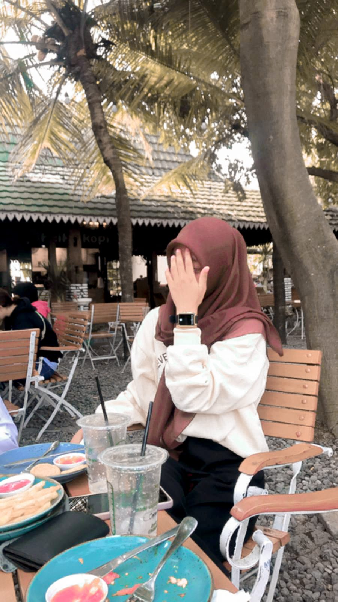

Bakat Saya

Pencak Silat
Saya memiliki bakat pencak silat, karena dengan memiliki bakat pencak silat agar bisa menjaga diri dari orang orang jahat.
Membaca alquran
Saya memiliki hobi membaca alquran karena dapat mendapat pahala dan masuk surga.
Riwayat Pendidikan Nazala ayu awalina
Riwayat Pendidikan
Karir
2022-2025 = SMKN 2 Karanganyar.
2019-2022 = SMPN 1 MOJOGEDANG.
2013-2019 = SDN 1 MUNGGUR.
2011-2013 = TK TADIKA GALAU

My Quotes
“ Sekolah muleh sore, bedo sekolah karo ayang e yo full ovt noo rii”
“Ora pengen dadi bagian seng nglarani, pengen e dadi bagian hidup.”